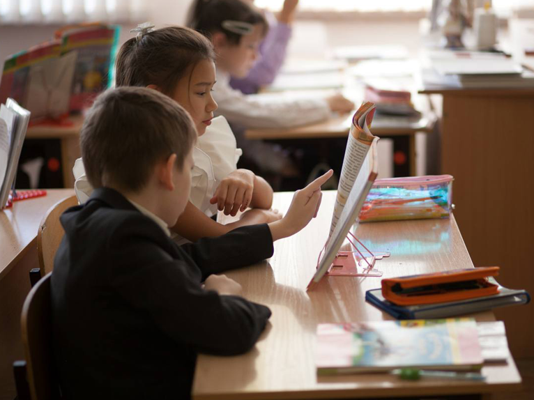
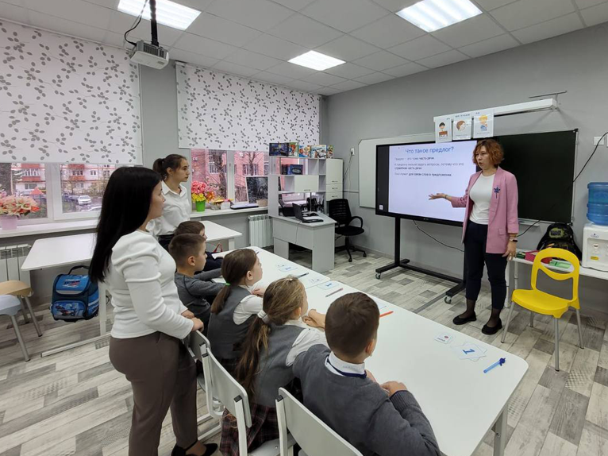
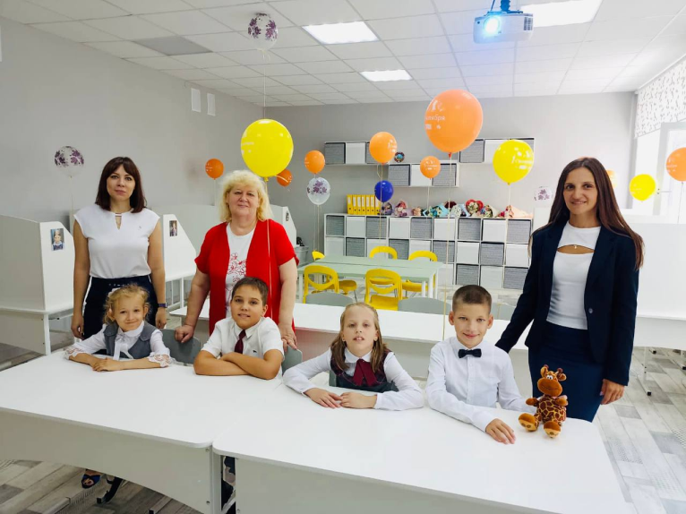
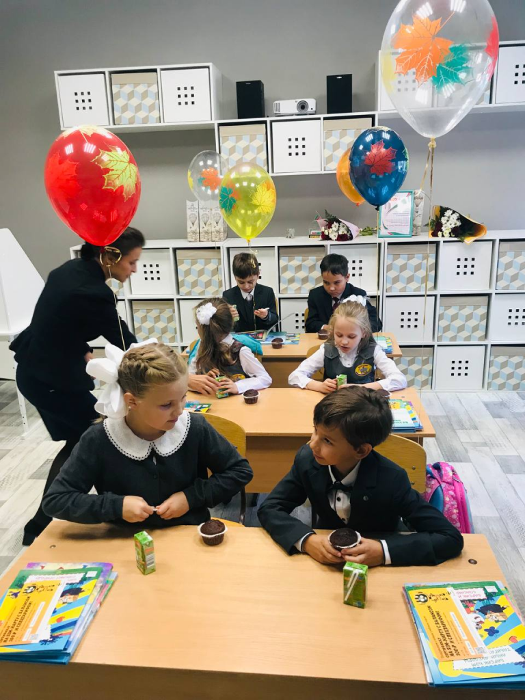
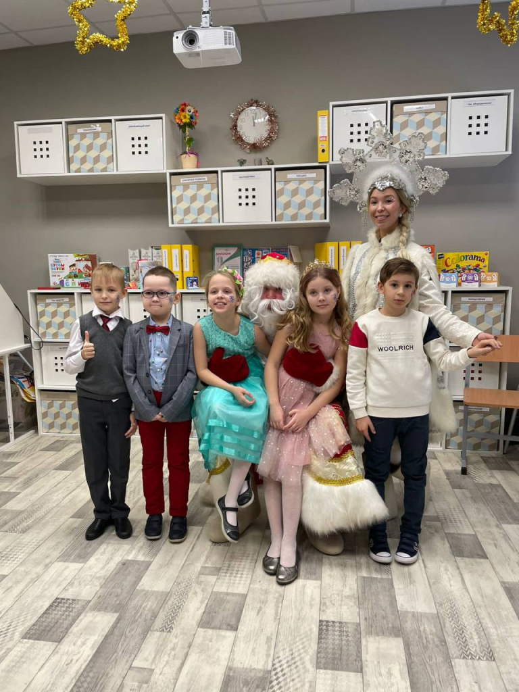
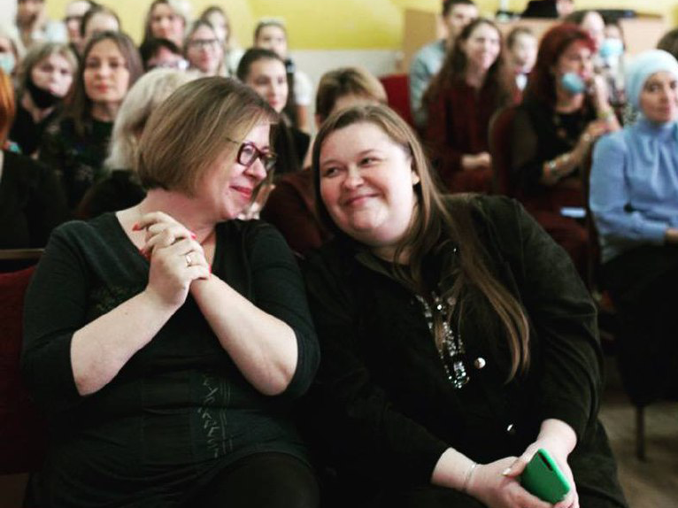
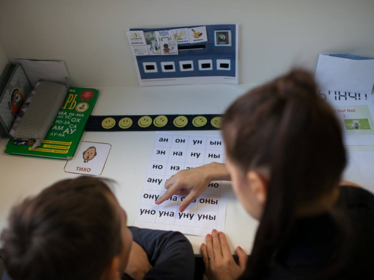

Проект "Ресурсный класс"

ЧТО ТАКОЕ РЕСУРСНЫЙ КЛАСС?
Модель «ресурсный класс» – это возможность для детей с аутизмом
учиться в общеобразовательных школах с поддержкой специалистов,
развивать навыки коммуникации и адаптироваться к обществу.
ИСТОРИЯ ПРОЕКТА
В 2016 году наша организация участвовала в международной конференции
«Аутизм. Выбор маршрута» в г. Воронеж, где были организованы первые
классы по модели «ресурсный класс». Загоревшись этой идеей и изучив
модель, мы разработали пилотный проект и в сотрудничестве с
благотворительным фондом «В твою пользу» представили его в Управлении
образования г. Казани. Проект был поддержан, и 1 сентября 2017 года в
казанских школах №1 и №97 открылись классы, полностью соответствующие
требованиям модели «Ресурсный класс». Помещения классов и зон
сенсорной разгрузки были полностью отремонтированы и оснащены
необходимой мебелью, техникой, сенсорными приспособлениями,
развивающими играми и учебными материалами. Работа классов велась с
применением методов прикладного анализа поведения, имеющих доказанную
эффективность, и сопровождалась очным куратором и супервизором.
Главное преимущество ресурсного класса для детей с РАС – это
возможность инклюзивного обучения (совместно с нейротипичными
сверстниками). Даже те дети, у которых много сложностей и нарушений,
имеют возможность находиться в среде сверстников и социализироваться.
Ребята получают помощь специалистов (дефектологов, логопедов,
психологов) и индивидуальное или групповое сопровождение тьютора.
РЕСУРСНЫЕ КЛАССЫ СЕГОДНЯ
Модель «ресурсный класс» реализуется более чем в 30 регионах России, и
практически везде – при поддержке родительских НКО. Это объясняется
тем, что система образования не готова полностью обеспечить условия,
необходимые для эффективного обучения детей с РАС (например,
предоставить супервизора каждому классу, обучать специалистов на
сертифицированных курсах прикладного анализа поведения, оснащать
дорогостоящим оборудованием зоны сенсорной разгрузки). В Казани за
годы существования модели «ресурсный класс» сформировалась тенденция
создания отдельных родительских НКО, опекающих конкретные классы, в
которых учатся их дети. СОШ №1 работает при поддержке АНО «Школа для
всех», СОШ №97 – при поддержке АНБО «Рассвет». Наша организация МГОО
«Просто другие» курирует ресурсный класс в СОШ №86 Советского района
г. Казани.
ПОЛЕЗНЫЕ ССЫЛКИ
• Вебинар «Правовое регулирование обучения детей с РАС в России»
• Вебинар «Что такое ресурсный класс?»
• Страница ресурсного класса СОШ №86 г.Казани





